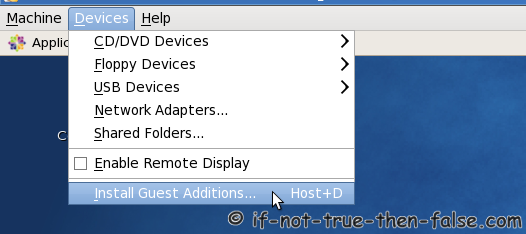

This is guide, howto install Oracle VirtualBox Guest Additions on Fedora, CentOS and Red Hat (RHEL). This guide should work with Fedora 28/27/26/25/24/23/22/21/20/19/18/17, CentOS 7.5/6.9/5.11, Red Hat (RHEL) 7.5/6.9/5.11.
VirtualBox Guest Additions is special software that can be installed inside Linux virtual machines to improve performance and make integration much more seamless. Among the features provided by these VirtualBox Guest Additions are mouse pointer integration and arbitrary screen solutions (e.g. by resizing the guest window).
Note: Fedora 28 have build in VirtualBox Guest Additions, but if you still wan’t (some reason) install latest/development/different version of GA, then you can use this guide.
Install VirtualBox Guest Additions on Fedora, CentOS and Red Hat (RHEL)
1. Change root user
su -
## OR ##
sudo -i
2. Make sure that you are running latest kernel
Update virtual machine kernel and reboot
## Fedora 28/27/26/25/24/23/22 ##
dnf update kernel*
## Fedora 21/20/19/18/17, CentOS/RHEL 7/6/5 ##
yum update kernel*
reboot
3. Mount VirtualBox Guest Additions
Click Devices > Install Guest Additions… on VirtualBox

Mount VirtualBox Guest Additions device
mkdir /media/VirtualBoxGuestAdditions
mount -r /dev/cdrom /media/VirtualBoxGuestAdditions
4. Install following packages
On CentOS/Red Hat (RHEL) 7/6/5, EPEL repo is needed
## CentOS 7 and Red Hat (RHEL) 7 ##
rpm -Uvh https://dl.fedoraproject.org/pub/epel/epel-release-latest-7.noarch.rpm
## CentOS 6 and Red Hat (RHEL) 6 ##
rpm -Uvh https://dl.fedoraproject.org/pub/epel/epel-release-latest-6.noarch.rpm
## CentOS 5 and Red Hat (RHEL) 5 ##
rpm -Uvh https://dl.fedoraproject.org/pub/epel/epel-release-latest-5.noarch.rpm
Install following packages
## Fedora 28/27/26/25/24/23/22 ##
dnf install gcc kernel-devel kernel-headers dkms make bzip2 perl
## Fedora 21/20/19/18/17, CentOS/RHEL 7/6/5 ##
yum install gcc kernel-devel kernel-headers dkms make bzip2 perl
5. Add KERN_DIR environment variable
## Current running kernel on Fedora 28/27/26/25/24/23/22, CentOS 7/6 and Red Hat (RHEL) 7/6 ##
KERN_DIR=/usr/src/kernels/`uname -r`/build
## Current running kernel on CentOS 5 and Red Hat (RHEL) 5 ##
KERN_DIR=/usr/src/kernels/`uname -r`-`uname -m`/build
## Fedora example ##
KERN_DIR=/usr/src/kernels/4.15.6-300.fc27.x86_64/build
## CentOS and Red Hat (RHEL) example ##
KERN_DIR=/usr/src/kernels/3.10.0-693.17.1.el7-x86_64/build
## Export KERN_DIR ##
export KERN_DIR
6. Install Guest Additions
cd /media/VirtualBoxGuestAdditions
# 32-bit and 64-bit systems run following
./VBoxLinuxAdditions.run
[root@fedora VBoxGuestAdditions]# ./VBoxLinuxAdditions.run
Verifying archive integrity... All good.
Uncompressing VirtualBox 5.2.8 Guest Additions for Linux........
VirtualBox Guest Additions installer
Removing installed version 5.2.6 of VirtualBox Guest Additions...
Copying additional installer modules ...
Installing additional modules ...
VirtualBox Guest Additions: Building the VirtualBox Guest Additions kernel modules.
VirtualBox Guest Additions: Running kernel modules will not be replaced until the system is restarted
VirtualBox Guest Additions: Starting.
7. Reboot guest system
reboot
Then VirtualBox Guest Additions install is ready.